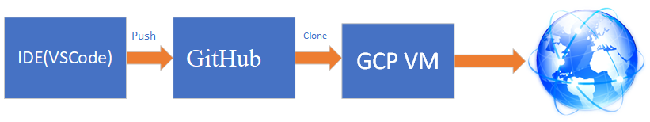
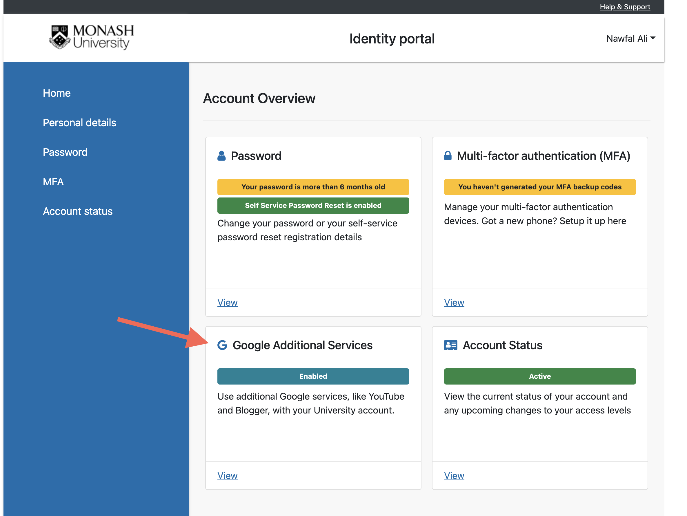
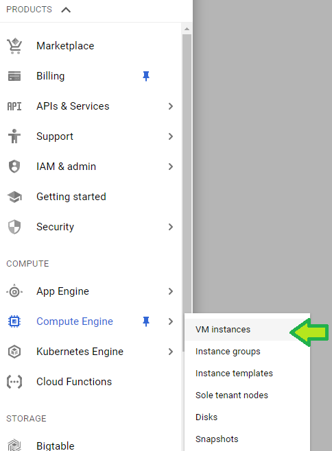
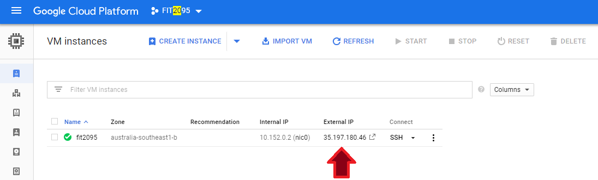

How to create and set up a Virtual Machine (VM) on Google Cloud Platform (GCP)?
GitHub: How to push your code to a GCP instance?
Deployment Workflow
In this unit, we will use a simple deployment workflow that consists of three stages as depicted below. In the first stage, the code of the required application is developed on a local machine. After testing all the functionalities of the system locally, all the files should be pushed to a VCS repository such as GitLab, GitHub, or BitBicket. The GitHub repository works as Intermediary storage between the IDE (local development) and Google Cloud Platform VM instance( production). In the last stage, we will do the following: clone the source code of the project to the VM instance; fetch all the required dependencies (i.e. npm install); build and execute the application.

Cloud Computing Models
Mainly there are three models of Cloud Computing depending on how the infrastructure and source codes are managed.
Infrastructure as a Service (IaasS): IaaSÂ is a form of cloud computing that offers virtualized resources over the internet. I this form, you can create your network of resources which can be Virtual Machines (VMs), firewalls, and load balancers.
Platform as a Service (PassS): PaaS is a form of cloud computing where the infrastructure will be created and managed by the cloud vendor and your responsibility as a developer is to provide the application's source code.
Software as a Service (SaaS): In this form, both the infrastructure and application source code will be managed by the cloud vendor.
To create a VM on GCP, push your code to a GitHub repo, and execute your code remotely, follow the following steps.
Step 1:Â Opt in to Google Apps additional services
Click on the following link and follow the on-screen instruction to opt in to Google Apps additional serviceshttps://identity.monash.edu/
Note: It might take 10-60 minutes to activate your account to Google apps
Step 2: Request a Google Cloud Platform coupon
Follow the following instructions to get your GCP coupon.
REMEMBER: You MUST be logged in with your Monash Address to request a GCP coupon.
Here is the URL you will need to access in order to request a Google Cloud Platform coupon. You will be asked to provide your school email address and name. An email will be sent to you to confirm these details before a coupon is sent to you.
Â
Here is the URL you will need to access in order to request a Google Cloud coupon. You will be asked to provide your school email address and name. An email will be sent to you to confirm these details before a coupon is sent to you.
From the top left drop menu, select 'New Project'. Provide a name (such as FIT2095Project) and click 'Create'.
Create a Virtual Machine Instance
Open the left panel-->Compute Engine-->VM instances-->Create a new VM

Provide the following details:
#
Item
Value
1
Name
a name for the instance (fit2095 for instance)
2
Region
Melbourne
3
Zone
Default
4
Machine type-vCPU
micro
5
Machine type-Memory
1.0GB
6
Boot disk
Ubuntu 20.04 Minimal
7
Firewall
Set both protocols
8
Create Button
Click
CAUTION: Mind your instance monthly cost. You have only 50$ in your credit.
By default, very few ports are open for new instances. Therefore, we have to open 8080 and 4200 or all of them.
To do that, open the left panel-->VPC network-->Firewall rules-->Create Firewall Rule and provide the following values
#
Item
value
1
Name
a name for the instance (fit2095rule for instance)
2
Target
All Instances in the network
3
Source IP ranges
0.0.0.0/0
4
Protocols and Ports
Allow
5
Create
Click
Note:Â 0.0.0.0/0 Â implies all IP addresses.
Step 4:Â Install the software stack
We have to install the following:
Git
Node.js
Step 1: open your instance page and click on the SSH icon. A new window represents your VM's terminal will appear. To install your stack, execute the following commands sequentially.
Note: you might need to key in your GitHub username and access token. The access token can be generated from github.com-->profile-->Settings-->Developer Settings-->Personal access tokens.
Return to your GitHub page and refresh and you should see your project files.
Now it's time to install the project's dependencies, build components, and run the server.
cd project_folder
npm install
node app.js
keep the terminal alive and go to the GCP instance page and copy the external IP address:

Open your browser and navigate to http://externalIP:8080 (in my case: http://35.197.180.46:8080)
Remember: Stop your VM instance once you are done!!